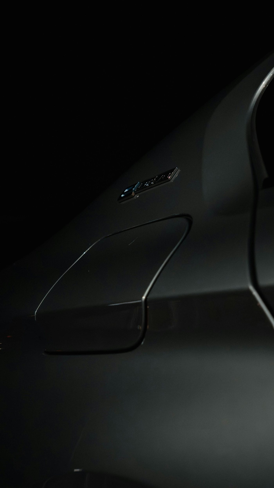
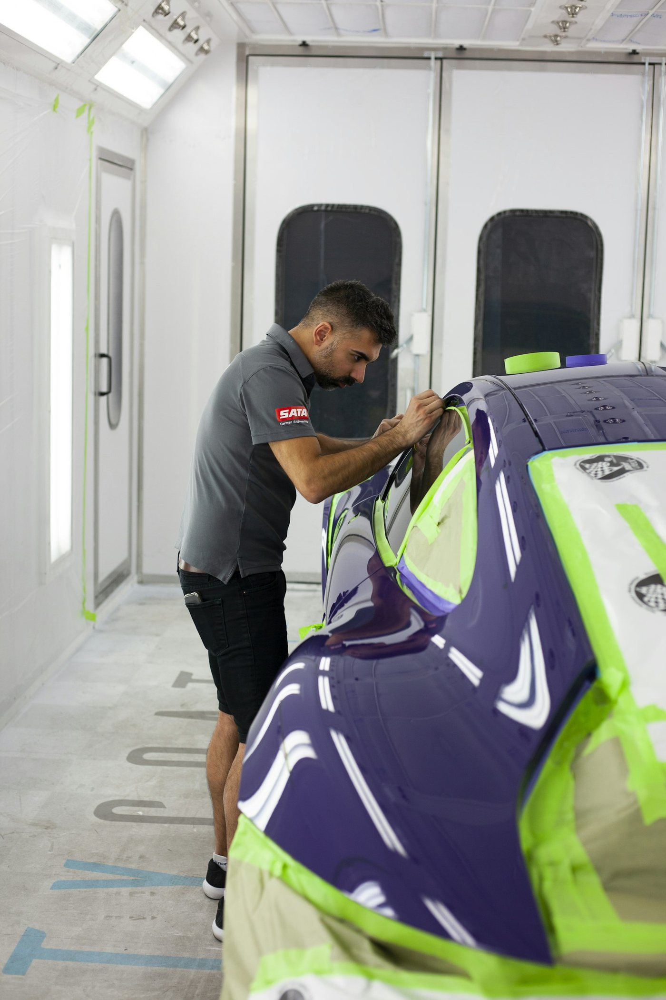
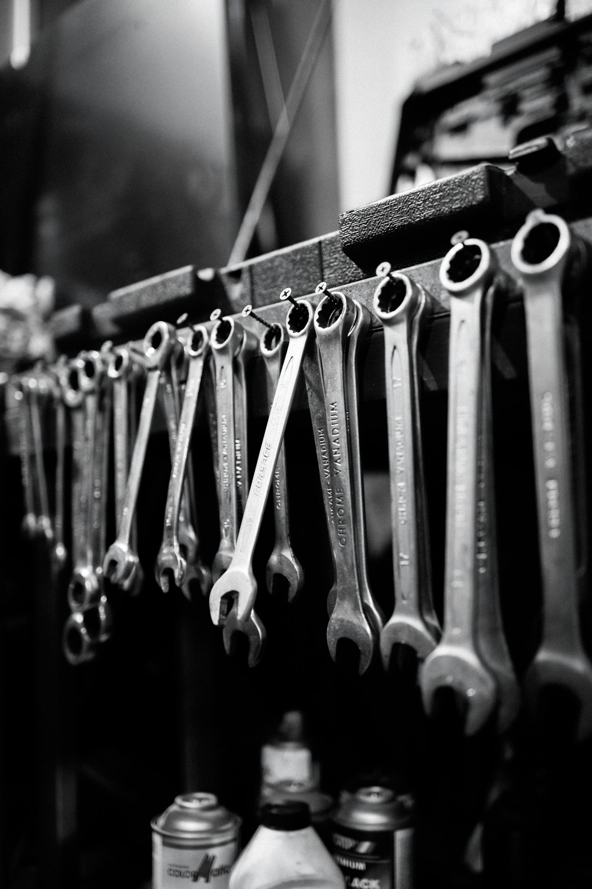

INDEX 00 — HOMESURFACE FINISHING FOR 3D PRINTS
3Dプリントを、 量産品と見分けがつかない 外観に。
積層痕を消す研磨から、自動車グレードの塗装仕上げまで。家電の量産塗装で「量産の精度」を磨いた自動車塗装職人が、勝負試作の一点からブリッジ生産の千個まで、郵送で全国からお受けします。

SEC. 01STATEMENT
デザインモデルの品質は、
表面処理で決まる。
それでも、表面処理を高い水準で
内製できる会社は、多くない。
その空白のために、この工房がある。
塗装はできても積層痕を知らない塗装店。造形はできても、仕上げは単色止まりの出力サービス。金型を作らない少量生産の最大の弱点は「積層痕のある外観」——それを解決する最終工程こそが、この市場の付加価値の在り処です。
SEC. 02CRAFT
3つの技術を、ひとりで持つ。
積層痕を消す研磨
3Dプリント特有の縞を #800 まで面で研ぎ落とし、プラサフで埋め、#1200 で仕上げる。塗装の出来の大半は、この下地で決まります。
自動車グレードの艶
2液ウレタンクリアは、吹きっぱなしで自動車外板と同等の艶が出ます。鏡面磨きに時間を使わないから、品質を揺らさずに数を仕上げられます。
3コートパールの意匠
ベース＋パール＋クリアの3層構造。ホワイトパールやソウルレッドなど、経験がそのまま出る高難度の意匠塗装に対応します。



SEC. 03COLOR LINEUP
名車の象徴色で組んだ、
8枚の技術証明。
8色中5色が3コート・高難度系。いずれも市販の調色済み補修塗料を正規の用途で使用し、「参考色」として仕上げます。
実績納品色
最高難度の技術証明
現行クラウンの上品な茶
全国650台限定の伝説色
最難関ソリッド黒
R34 GT-Rの代名詞
英国の象徴色
匠塗のもう一枚の看板
DRAG / SCROLL →
SEC. 04TWO SCENES
一点の勝負にも、千個の生産にも。
プレミアムデザインモデルの一点仕上げ
企業トップへの最終プレゼン、重要商談、展示会、クラウドファンディングの掲載写真。「絶対に外せない場面」で使う高品質試作を、量産品の顔に仕上げます。
金型を作らない少量生産の外観仕上げ
クラウドファンディングのリターン品、D2Cの初回ロット、産業機器の筐体。金型なしの少量生産を「量産品の見た目」にする最終工程を担います。
試作を仕上げたその手で、量産も仕上げる。クラウドファンディング達成の瞬間に「試作と同じ品質で数百個できます」と言える供給者は、ほとんどいません。
SEC. 05BY THE NUMBERS
工房の能力を、
数字で。
6本
バンパー同時塗装SIMULTANEOUS BUMPERS
この同時処理能力があるから、小物なら100個超を一度に。数量対応力は、そのまま価格に還元されます。
220–2000
段階研磨の番手PROGRESSIVE GRIT
粗い番手から徐々に上げる段階研磨。海外の現場で「射出成形品と見分けがつかない」とされる面の基準です。
8色
名車の象徴色ラインナップSIGNATURE COLORS
うち5色が3コート・高難度系。ソウルレッドもベイサイドブルーも、塗れること自体が技術の証明です。
1–1,000
対応数量（点）PIECES PER ORDER
勝負試作の一点から、ブリッジ生産の千個まで。試作と量産を、同じ品質基準で仕上げます。
40時間
最高級の黒が下地にかける時間CENTURY "KAMUI" BLACK
名車センチュリーの黒は、塗装だけで約40時間・水研ぎ3回。その下地への敬意を、すべての仕事に持ち込みます。
5–7日
2液ウレタン完全硬化FULL CURE
主剤と硬化剤の化学反応で硬く艶やかに。硬化を待ち、検品してから発送します。急がば、回る。
SEC. 06MATERIALS
FDMも、光造形も、SLSも。
素材ごとに、手を変える。
造形方式が違えば、積層痕の出方も塗料の乗り方も変わります。FDMは研磨で埋め、光造形は洗浄と二次硬化を前提にし、SLSは多孔質を作り込む。PLA・PETG・ABS・ASA、各種レジン、ナイロンまで、素材別の勘所をまとめています。
SEC. 07NOTES
なぜ綺麗なのかは、
写真だけでは伝わらない。
工程と色の裏側を、読みものとして残しています。センチュリーの黒が水研ぎ3回である理由。ディーラーでも同色にならない赤の構造。専門性は、言葉にしてはじめて伝わります。
GALLERYIN THE WORKSHOP
工房の、手の記録。
研ぎ、吹き、仕上げる。派手さのない手仕事の断片を。



見積もりは、3つの数字で。
サイズ × 個数 × グレード。
造形データや写真があれば、より正確に概算をお出しできます。